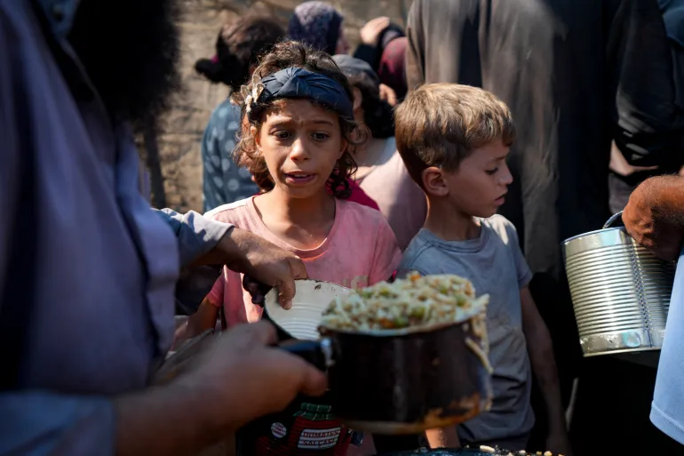

Israel escalates Lebanon bombardment as officials considers ceasefire plan
Strikes earlier on Saturday killed two medics in south Lebanon, including one in Borj Rahal and another in Kfartebnit, and injured four other rescue workers, with two still missing, the ministry added. Israeli air strikes also targeted areas of the southern suburbs of Beirut for a fifth consecutive day. The Israeli military has said the attacks were directed at Hezbollah infrastructure, including a weapons storage facility and a command centre.
 read more
read more
‘Stripped of our human dignity’: What it means to be hungry in Gaza
Khan Younis, Gaza – What does it mean to be hungry for months? In Gaza, where more than 43,000 of us have been killed by Israel’s bombardment and ground invasions – and many more thousands are lost, feared dead, under the rubble – we have been punished with hunger now for more than a year.
 read moreRussia-Ukraine war: List of key events, day 997
1-President Joe Biden’s administration has allowed Ukraine to use US-made weapons to strike deep into Russia, Reuters and other news outlets reported, quoting two US officials and a source familiar with the decision, in a significant reversal of Washington’s policy on the Ukraine-Russia conflict.
2-Washington’s decision to let Kyiv strike deep into Russia with long-range US missiles escalates the conflict and could lead to another world war, senior Russian lawmakers said on Sunday.
3-Russia unleashed its largest air strike on Ukraine in almost three months on Sunday, launching 120 missiles and 90 drones. At least seven people were killed and severe damage was caused to the power system, officials said.